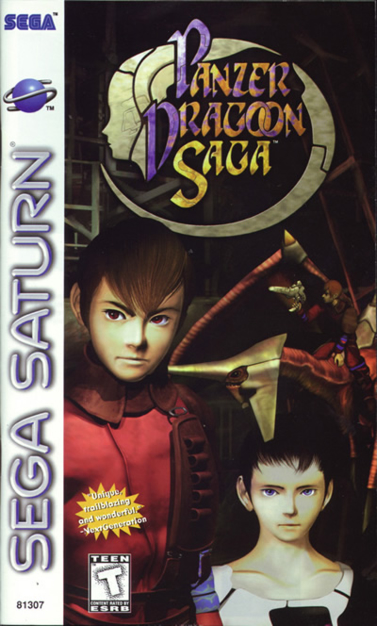
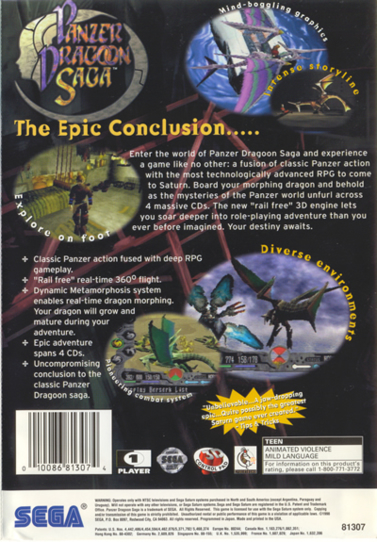

How the Gameplay has Changed with the Advent of Panzer Dragoon Saga The third game in the Panzer Dragoon series: Panzer Dragoon Saga, took an entirely different approach as to what type of game it was and how you play it. Panzer Dragoon Saga is a rpg or role playing game. Rpg's allow you to take the role of a main character or hero. Also, in rpg's, you level up, go to towns, talk to villagers or towns people and buy items from item shops, to help you out on your adventure. All of these things can be done in Panzer Dragoon Saga. The setting of the world is usually that of fantasy. Panzer Dragoon Saga goes down more of a science fiction road. Within the game, you will find long forgotten technologies from an ancient civilization, as well as bio-engeneered monsters which were left over by that ancient, mysterious civilization. These monsters are reeking havoc on what little human life is left. The game may not have so much of a fantasy setting, but it's the engaging story and adventure that counts! Once you start playing the game, you'll find that you will want to know more about the wonderous technologies and monsters created by this long forgotten race of people. You take the role of a young hunter named Edge. Along with his mysterious dragon, an epic adventure awaits, to free the world from the will of the Ancients. Panzer Dragoon Saga takes some of the rail shooter gameplay aspects of the previous games and completely removes the rails. When exploring the environment, your dragon is free to go wherever he pleases, without having to be on a set path, unable to stop. This allows you to freely explore each location with great detail. |
 Panzer Dragoon Saga game cover. |
 Panzer Dragoon Saga back cover. |
Controlling Edge the Main Character